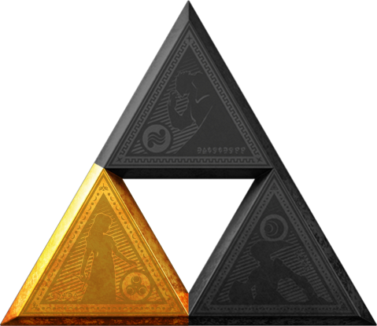

Wisdom

Description
Today we learn what is required to posess the Triforce of Wisdom. While some may say this is the least appealing of the three, that is not
the case. This task will take you on a wild ride, and it will not be easy. While you won't be slaying mosnters necessary, you must use stealth and
guile to ensure the Hero of Time can complete his mission.
Ingredients/Requirements
- Be Princess Zelda
- Be crafty and intelligent - and be good at making disguises
- The Ocarina of Time, and a back up Ocarina + extensive musical ability
- Impa, your friend and guardian
- Ability to interpret your own dreams as visions
- An unrealisticallly strong throwing arm...
The Quest
- When you dream of dark clouds covering Hyrule, this is your cue
- Wait for the arrival of a weird kid from the Forest to your chambers in Hyrule Castle
- Warn him of the man meeting with your father and his intentions, inform him of your dream
- Teach the weird kid the song of the Royal Family
- Wait
- When Impa tells you it's time to go - GO
- During your escape on horseback, take the Ocarina of Time, and CHUCK that thing into the moat!
- Wait 7 years, get your disgues ready
- Follow the path of the Hero of Time, and give him help along the way, but make sure you're vague. He'll figure it out
- When the time comes, meet him at the Temple of Time and reveal yourself
- Ganon will not be thrilled - he will kidnap you. Don't worry, this is part of the plan
- Upon your rescue by the Hero of Time, use your cool laserbeam power to pin down the Evil King Ganon so the Hero can deliver the coupe de grace
- You posess the triforce of Wisdom! You've had it the whole time...